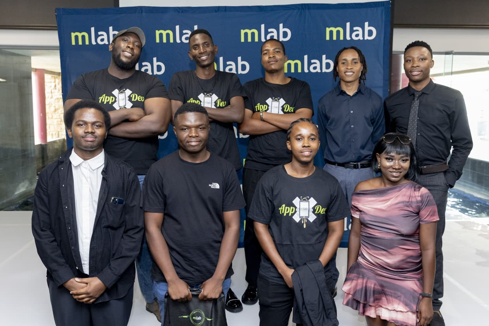

MY STORY
I'm Kgopotso Mangena, an Informatics graduate passionate about building technology that solves real problems. My journey has taken me across multiple disciplines — from leading agile development teams, to analyzing business requirements, to designing databases and developing mobile/web applications.
At mlab (CodeTribe Academy), I guided a team through full Scrum cycles, delivering mobile and web solutions with React and Java. At Ricoh South Africa, I worked as a Business Analyst, translating complex business needs into actionable technical requirements and facilitating user acceptance testing.
I hold certifications in Azure AI and React development, and I thrive at the intersection of business and technology — ensuring solutions are not only functional, but scalable and user-focused.